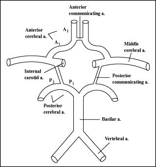

What You Will Learn
After reading this note, you should be able to...
- This content is not available yet.
Read More 🍪
- Cerebrovascular accidents (CVA) are neurological complications of Sickle Cell Disease (SCD).
- There are two major classifications of CVA:
- Overt stroke: Focal neurologic deficit lasting for >24 hours and/or abnormal imaging. They are due to large vasculopathy.
- Silent stroke: No focal neurologic deficit for >24 hours, usually diagnosed using T2-weighted MRI. Typically affects the penetrating arteries.
Pathophysiology of VOC
- Red cell adhesion
- Leucocyte adhesion
- Inflammation
- Endothelial injury
- Activated coagulation pathway
- Obstruction of small vessels by sickle cells
Pathophysiologic Mechanisms in CVA
- Repeated epithelial damage by adherent sickle cells
- Vasoconstriction
- Nitric oxide deficiency

Circle of Willis
×

Circle of Willis
- Prior Transient Ischemic Attack
- Low steady state hemoglobin
- Elevated blood pressure
- Recent history of acute chest syndrome
- Severe headache
- Poor concentration/school performance
- Changes in gait
- Aphasia
- Hemiplegia
- Convulsions
- Loss of consciousness
- History taking
- Physical Examination
- Investigations
- Treatment
- Prevention
Treatment
- It is an emergency
- ABC of resuscitation
- Oxygen to maintain SPO2 >96%
- Simple blood transfusion within 1 hour of presentation to raise Hb to 10g/dl. This increases the oxygen-carrying capacity of the blood. Transfusing beyond 30% PCV may lead to hyperviscosity.
- Prompt exchange blood transfusion with HbAA blood to reduce the sickled cells to an ideal value of <30% or at least 50%
- Supportive care
- IVF
- Caloric support
- Antibiotics/antimalarial if indicated
Investigations
- Specific
- Brain imaging (Magnetic resonance imaging)
- Packed cell volume
- Others
- Full blood count
- Lumbar puncture for CSF analysis
- E/U/Cr
- CT +/- Angiography/venography
Prevention
- Used as a preventive measure; it measures the velocity of the blood in the terminal portion of the internal carotid and the proximal portion of the middle cerebral artery.
- Measured in Time-Averaged Mean Maximum (TAMM) blood flow velocity.
- Increased risk of CVA if TAMM >200 cm/sec
- Conditional threshold <200 cm/sec but >180 cm/sec
- Normal <180 cm/sec
- Regular blood transfusion may be needed to keep the Hb level around 10 g/dl in children at risk of CVA (TAMM >200 cm/sec)
- Despite regular blood transfusion, 20% will develop a repeat stroke, 30% of which will develop a third stroke
- Hydroxyurea
- Physiotherapy
- Nutritional rehabilitation
- Ophthalmic and auditory stimulation
- Use of anticonvulsants
Transcranial Doppler Ultrasound
Prevention of a Repeat Stroke
Rehabilitation
Practice Questions
Check how well you grasp the concepts by answering the following questions...
- This content is not available yet.
Read More 🍪
Contributors
Jane Smith
She is not a real contributor.
John Doe
He is not a real contributor.
Send your comments, corrections, explanations/clarifications and requests/suggestions